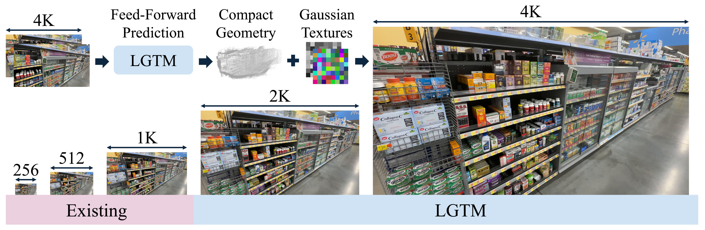
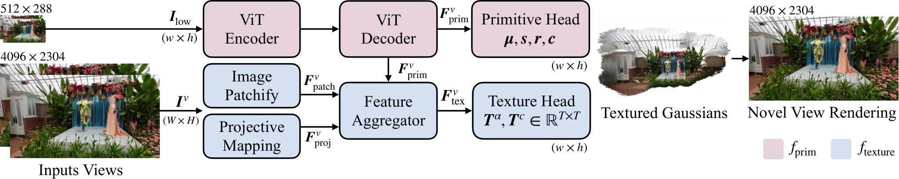
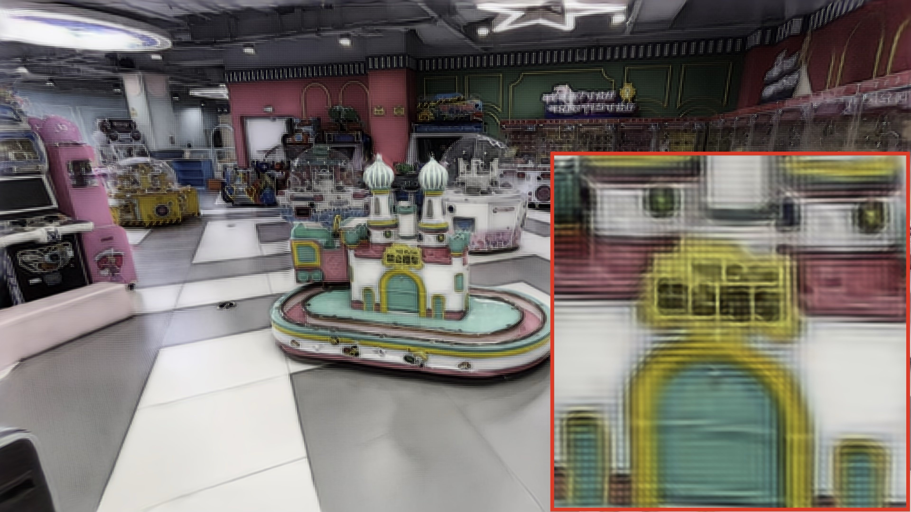
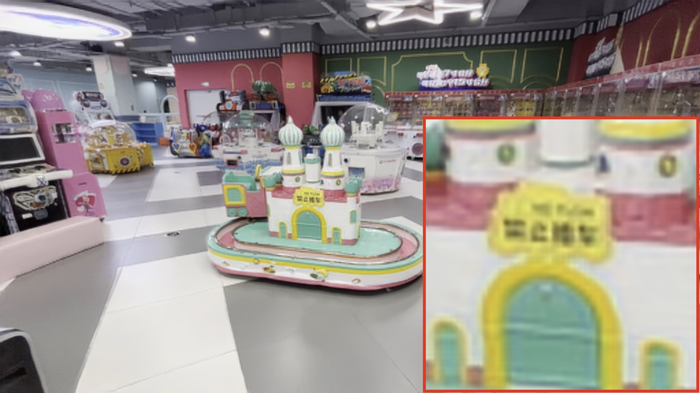
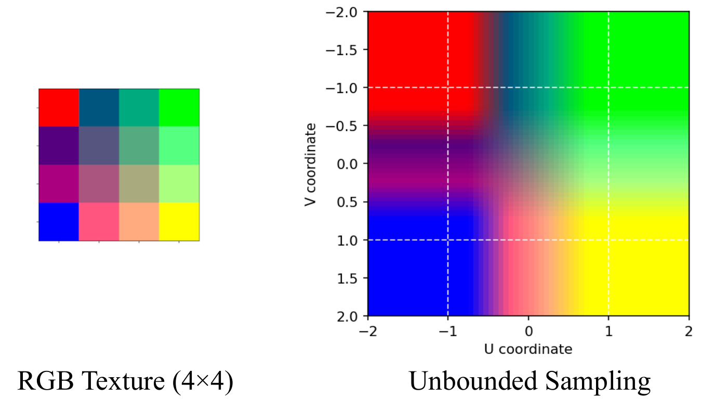
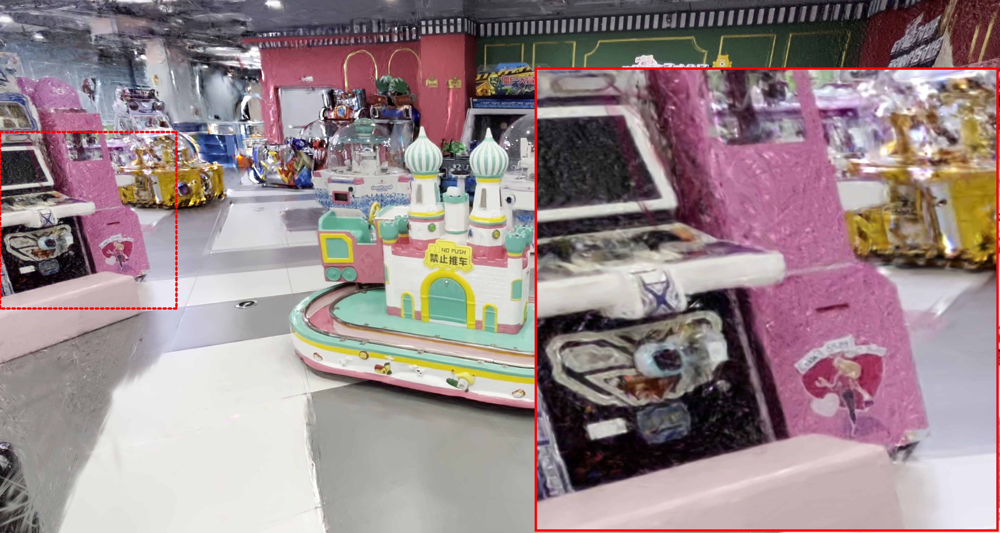
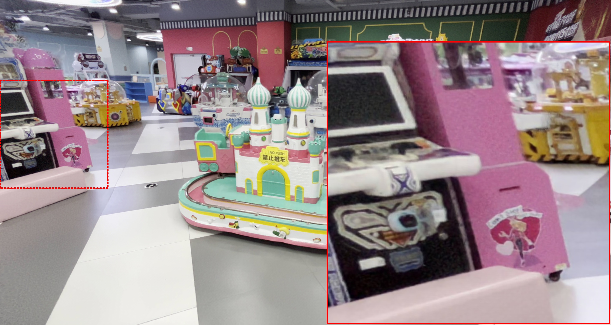

目录
1论文摘要
一句话:把"几何"与"外观"在前馈 3DGS 中彻底解耦——用极低分辨率的 2D 高斯基元撑几何骨架,给每个基元挂一张可学习的小纹理贴图承载高频外观,从而绕开"高斯数量随分辨率平方增长"的显存墙,首次实现免逐场景优化的 4K 前馈新视角合成。
前馈 3DGS(NoPoSplat / DepthSplat / VGGT 一系)把高斯基元与像素对齐:输出 1024×576 就要预测 59 万像素级高斯,训练显存 61.85 GB;上到 2K/4K 直接 OOM。LGTM 的观察是:场景信息有天然的频率分离——几何是低频的,纹理是高频的。于是基元网格固定在 512×288(4K 下仅 14.7 万像素级基元),渲染分辨率靠每基元纹理放大(8×8 纹理 ⇒ 4096×2304 有效输出)。4K 训练显存 28.23 GB(较 1024×576 的 NoPoSplat 还低一半以上),推理峰值显存仅 5.51 GB、单帧 175 ms(A100)。

2研究背景与动机
现有方法的两条死路
前馈 3DGS:分辨率墙
pixel-aligned 前馈方法(Charatan 2024 / Chen 2024 / Fan 2024 / Smart 2024 / NoPoSplat 2025)在数百像素分辨率工作。高斯数随边长平方增长:512→4K 像素量增 64×,网络预测与高斯渲染双双爆显存。§3 Pilot Study:NoPoSplat 扩到 1024×576 训练显存已达 61.85 GB,2K/4K 直接 OOM。
纹理化高斯:优化墙
纹理化 2DGS(BBSplat / Gaussian Billboards / Taming 3DGS 等一系)把外观从几何解耦,确实大幅省基元,但全部是逐场景优化方法——每个新场景都要重新跑一遍优化,无法跨场景泛化,更不能前馈。
3DGS 本质耦合
每个高斯只编码单一(视角相关)颜色,连"平坦但纹理丰富的表面"都需要海量微小高斯才能表达高频外观——外观与几何死死绑在一起,是两条路线共同的根本限制。
核心洞察(insight)
Pilot Study(论文 §3,表 1)
把 NoPoSplat 与 LGTM 在"等效输出分辨率"下对比(表 1 全文见 §12)。关键数字:NoPoSplat 原生 1024×576 → 61.85 GB 训练显存;LGTM 以 512×288 基元 + 2×2 纹理达到同一输出,显存 20.16 GB,且 LPIPS 0.213 反而优于 NoPoSplat 的 0.239——更少的基元+纹理,质量还更高,直接验证了解耦思路。4K 档 LGTM 训练显存 28.23 GB(NoPoSplat 已 OOM 无数据)。
3算法总体框架
输入 / 输出定义
输入为一组 $N$ 个视角的图像 $\{{\bm{I}}^{v}\}_{v=1}^{N}$ 及其低分辨率版本 $\{{\bm{I}}^{v}_{\text{low}}\}_{v=1}^{N}$;输出为一组带纹理的 2D 高斯基元 $\{{\bm{\mu}}_i, {\bm{s}}_i, {\bm{r}}_i, {\bm{c}}_i, {\bm{T}}_i^{c}, {\bm{T}}_i^{\alpha}\}$。整体映射(论文式 (0),HTML 中渲染为表格式公式):
其中 $hw$ 为基元网格分辨率(如 512×288=147,456 基元/视角),$i$ 遍历网格上每个位置。整个网络由两个子模块组成:几何网络 $f_{\text{prim}}$ 与纹理网络 $f_{\text{texture}}$(式(3)(4))。
符号表
| 符号 | 含义 | 形状/取值 |
|---|---|---|
| ${\bm{I}}^v$, ${\bm{I}}^v_{\text{low}}$ | 视角 $v$ 的原图 / 低分辨率图 | $[H{\times}W{\times}3]$, $[h{\times}w{\times}3]$, $h=H/T$ 量级 |
| ${\bm{\mu}}_i$ | 第 $i$ 个基元的 3D 中心(由 pts3d 点图给出) | $[3]$ |
| ${\bm{s}}_i$, ${\bm{r}}_i$, $o_i$ | 基元缩放、旋转(四元数)、不透明度 | $[3]$, $[4]$, 标量 |
| ${\bm{c}}_i$ | SH 基色(低频外观) | $3(d_{\text{sh}}{=}4)$ 系数,sh_degree=1 |
| ${\bm{T}}_i^{c}$, ${\bm{T}}_i^{\alpha}$ | 每基元颜色纹理 / alpha 纹理 | $\mathbb{R}^{T\times T\times 3}$, $\mathbb{R}^{T\times T}$;$T\in\{2,4,8\}$ |
| ${\bm{M}}_{i,v}$ | 像素 $\to$ 基元局部坐标的 2D 单应(ray-splat 交点) | $3{\times}3$;$u = {\bm{M}}_{i,v}(x)$ |
| $\sigma$ | 纹理在基元平面内的跨度(共享超参) | 代码默认 1.0 |
| ${\bm{F}}^{v}_{\text{prim}}$ | 几何网络 ViT decoder 特征(共享给纹理网络) | token 序列 |
总体数据流
低分辨率输入 ViT encoder-decoder
(基线: NoPoSplat/DepthSplat/Flash3D/VGGT backbone)"] PRIM --> P1["紧凑 2DGS 基元网格 h x w
mu, s, r, o, c(SH 基色)"] PRIM --> F1["decoder 特征 F_prim(共享)"] INPUT --> TEX["纹理网络 f_texture
高分辨率输入"] TEX --> PATCH["图像 patchify 卷积特征 F_patch"] P1 --> PROJ["学习型投影纹理映射
逆单应 M^-1: 原图反投到基元纹理
得投影先验纹理 T_c,proj 与特征 F_proj"] F1 --> FUSE["三路特征融合
F_prim + F_patch + F_proj"] PATCH --> FUSE PROJ --> FUSE FUSE --> T1["每基元纹理 T^c, T^a"] P1 --> RAST["纹理化 2DGS 光栅化
逐像素 ray-splat 交点 u
双线性采样 T[u](无界,边界锚定)"] T1 --> RAST RAST --> OUT["4K 新视角渲染
alpha 混合"] style INPUT fill:#dbeafe,stroke:#3b82f6,color:#1e3a5f style OUT fill:#dcfce7,stroke:#22c55e,color:#14532d style PRIM fill:#ede9fe,stroke:#8b5cf6,color:#4c1d95 style TEX fill:#ede9fe,stroke:#8b5cf6,color:#4c1d95 style PROJ fill:#fef3c7,stroke:#d97706,color:#78350f

4预备知识: 2DGS 与纹理化泼溅
4.1 2D Gaussian Splatting
2DGS 用 3D 空间中的 2D 高斯基元表示场景(库内笔记 2DGS)。渲染视角 $v$ 时,对每个像素 ${\bm{x}}=(x,y)$ 计算相机射线与高斯平面 $i$ 的交点,即 2D 单应变换 ${\bm{u}} = {\bm{M}}_{i,v}({\bm{x}})$,再在局部坐标上求 2D 高斯函数 $\mathcal{G}({\bm{u}})=\exp(-\frac{1}{2}(u^2+v^2))$。采样 alpha 与颜色、以及按深度排序的 alpha 混合:
其中 ${\bm{d}}_i$ 为观察方向,SH 为球谐。
4.2 纹理化 2DGS(LGTM 的表示)
沿用经典 billboard 技术与 BBSplat(Svitov 2025)思路,给每个 2DGS 基元挂两张可学习贴图:颜色纹理 ${\bm{T}}_i^{c}\in\mathbb{R}^{T\times T\times 3}$ 与 alpha 纹理 ${\bm{T}}_i^{\alpha}\in\mathbb{R}^{T\times T}$,$T$ 为纹理分辨率。射线-基元交点 ${\bm{u}}$ 处用双线性采样(记 ${\bm{T}}[{\bm{u}}]$,§8)取值;alpha 纹理替代高斯衰减,颜色纹理叠加在 SH 基色之上:
5几何网络 f_prim:低分辨率骨架预测
5.1 网络结构表(以 NoPoSplat 基线为例,源码核实)
| 输入 | 层/算子 | 输出 |
|---|---|---|
| 原图 $[B,V,3,H,W]$(4K 档 $2304{\times}4096$) | 双线性 antialias 下采样 ÷ $T$(纹理尺寸,NoPoSplat 取 8) | 低分辨率输入 $[B,V,3,288,512]$ |
| 低分辨率图 + 内参 token | CroCo backbone:ViT-Large encoder + Base decoder(ViTLarge_BaseDecoder),patch 16,内参以 token 嵌入(degree 4) | 每视角 decoder token 序列 → 重排为空间特征图 |
| decoder 特征(4 层 hook) | DPT 融合:act_postprocess(1×1 conv + 反卷积)+ scratch + 4× refinenet(残差卷积单元级联,逐层 2× 上采样) | $F_{\text{prim}}$ 融合特征 $[\cdot,256,\cdot,\cdot]$ → feat_up 2× |
| 融合特征 + 低分辨率图(input_merger:Conv3×256) | 逐元素相加 | 几何特征 $[B,256,h,w]$ |
| 几何特征 | GS head:Conv3(256→256)+ReLU+Dropout0.1+Conv1×1;每视角一个 head(head1/head2) | pts3d 中心(独立 DPT head,exp 深度模式)+ 原始高斯参数 |
| 原始参数 | split → scales softplus 后 clamp $[min,0.3]$;xyzw 归一化;SH 乘 sh_mask($d_{\text{sh}}{=}4$) | $\{\mu,s,r,o,c\}$,基元网格 $h{\times}w$ |
出处:encoder_noposplat.py:256-274(纹理开启时输入按 texture_size 下采样)、head_noposplat.py:388-390(FEATURE_DIM=256、PATCH_SIZE=16)、configs/encoder/noposplat.yaml(CroCo ViTLarge_BaseDecoder、gaussian_scale_max=0.3、sh_degree=1)。DepthSplat/Flash3D/VGGT 基线替换 backbone 为 UniMatch / UniDepth-ViTL14 / VGGT,头部结构同构。
5.2 数学形式化
5.3 前向流程(逐步)
- 原图归一化 $[0,1]\to[-1,1]$,按 $T$ 下采样得到 ${\bm{I}}_{\text{low}}$——基元数量因此与输出分辨率解耦(4K 图也只过 288×512 的网络)。
- backbone 前向:低分辨率图 → ViT encoder → 非对称 decoder,输出每视角 token;两个 context 视角分别走 head1/head2。
- pts3d head 预测每个网格位置的 3D 点(基元中心 $\mu$),exp 距离模式激活。
- GS head 输出 opacity(经 pdf→opacity 映射;发布配置为恒等映射)+ scales + 旋转四元数 + SH 系数。
- 基元展平为 $[B, V{\cdot}hw, \cdot]$,交给纹理网络与光栅化器。
5.4 模块内部图
288x512"] --> B["CroCo ViT-L enc
+ Base dec (patch16)"] B --> C["DPT fuse: 4层hook
act_post + scratch + refinenets"] C --> D["F_prim 融合特征"] C --> E["pts3d head
基元中心 mu"] D --> F["+ 低分辨率图特征
(input_merger)"] F --> G["GS head
o, s(clamp<=0.3), r, SH基色"] style A fill:#dbeafe,stroke:#3b82f6,color:#1e3a5f style E fill:#fef3c7,stroke:#d97706,color:#78350f style G fill:#dcfce7,stroke:#22c55e,color:#14532d
5.5 监督信号
该模块无直接几何监督(不预测深度 GT 损失);监督全部来自高分辨率渲染图的光度损失(MSE + LPIPS,§9)——输入低分辨率、渲染与监督在高分辨率,这就是"高分辨率重训练/监督"的核心(§7)。基元中心 $\mu$ 的梯度经光栅化反传,尺度 $s$ 被显式 clamp 到 0.3 以内防爆炸。
6纹理网络 f_texture:高分辨率外观预测
6.1 三路互补特征(核心设计)
| 特征 | 来源 | 承载信息 |
|---|---|---|
| ${\bm{F}}^{v}_{\text{patch}}$ | 高分辨率图像 patchify + 卷积层 | 局部外观特征(高频细节的主要载体) |
| ${\bm{F}}^{v}_{\text{proj}}$ | 学习型投影纹理映射得到的投影先验纹理,再提特征 | 与原图像素级对齐的强高频细节 |
| ${\bm{F}}^{v}_{\text{prim}}$ | 复用几何网络 decoder 特征 | 几何/语义上下文,保证纹理与骨架一致 |
6.2 学习型投影纹理映射(论文最巧的一环)
对基元 $i$,用逆单应 ${\bm{M}}_{i,v}^{-1}: {\bm{u}} \to {\bm{x}}$ 把基元局部坐标映回源图像素坐标,在高分辨率源图上采样 RGB,得到"投影先验纹理":
直观上这是光栅化的逆过程:不是把高斯画到图上,而是把图源"反画"回高斯纹理。作者称 4K 图此步仅需数毫秒。投影先验与原图像素级对齐,携带最强高频信号;但基元位姿不准处会有拉伸/错位,因此只作先验——网络再学残差修正(代码中 texture_project_as_base=true:投影纹理作 base,网络预测 delta 叠加,head_noposplat.py:342-350)。
6.3 网络结构表(源码核实)
| 输入 | 层/算子 | 输出 |
|---|---|---|
| 几何 head 输出 + 高分辨率原图 $[\cdot,3,2304,4096]$ | 激活 scales(softplus+clamp≤0.3)/xyzw 归一化;像素级 K(c2w 求逆得 w2c) | 投影所需位参 |
| 位参 + 高分辨率图 | project_texture_colors:逆单应反投影采样,得投影纹理 $[B, 3T^2, h, w]$ | ${\bm{T}}^{c,\text{proj}}$ 摊平为通道 |
| 投影纹理 + 高分辨率图 | direct_2dgs_baked_texture_processor(在高分图上处理投影纹理) | 纹理特征(高分率) |
| 高分辨率图 | direct_2dgs_imgs_patchify(patchify 卷积) | $[\cdot,256,h,w]$ 图像特征 |
| 三路特征 | concat(768 通道)→ direct_2dgs_conv_block 卷积融合 | 融合特征 $[\cdot,256,h,w]$ |
| 融合特征 | direct_2dgs_texture_head:1×1 conv → $d_{\text{texture}}$ 通道 | 纹理 delta $[\cdot, 3T^2, h, w]$(GAUSSIAN 模式只有颜色) |
| 投影纹理(base)+ delta | 逐元素相加 | 最终 ${\bm{T}}^{c}$(${\bm{T}}^{\alpha}$ 视模式) |
出处:head_noposplat.py:271-371(投影→处理→patchify→768 通道 concat→conv→texture head→base+delta 全流程)。
6.4 前向流程与可导性
- 由几何网络拿到 pts3d/scales/xyzws(激活后),结合内参/位姿逐基元构造逆单应;
- 式(5) 反投影采样——采样坐标由网络预测量导出,对位姿/尺度可导;
- 投影纹理与 patchify 图像特征、backbone 特征三路 concat 卷积融合;
- 1×1 卷积头输出纹理 delta,叠加到投影 base 上(零初始化保证初期等价于纯投影);
- 纹理随 2DGS 光栅化进入渲染,梯度经双线性采样回传至纹理头与几何分支。
6.5 监督信号
无纹理直接监督(没有"纹理 GT");监督同样来自渲染图 MSE + LPIPS。这等价于把"高频外观该怎么贴"完全交给渲染损失端到端学习。
7训练策略与高分辨率监督
两阶段渐进训练(论文表述)
Stage 1: 高分辨率监督预训练几何网络
仅用 $f_{\text{prim}}$ 训练 2DGS 参数:输入低分辨率 ${\bm{I}}_{\text{low}}$,预测 $h{\times}w$ 基元网格,但渲染与监督在全分辨率 $H{\times}W$。高分辨率监督迫使网络学到适合高分渲染的预测尺度 $s$ 等参数,建立强几何先验——直接渲染低分辨率模型的基元到高分辨率会因 3DGS 无抗锯齿而产生空洞(holes,附录 A.1 图 6 实证)。
Stage 2: 几何+纹理联合训练
联合训练 $f_{\text{prim}}$ 与 $f_{\text{texture}}$;为保持几何稳定,预训练的几何网络参数用 0.1× 学习率(论文表述);颜色纹理 ${\bm{T}}^{c}$ 零初始化,作为 SH 基色的高频增量(式(2))。两阶段均用 MSE + LPIPS 光度损失。
高分辨率重训练的三种替代方案(附录 A.1)
| 方案 | 做法 | 结果 |
|---|---|---|
| Direct Render | 低分辨率模型的基元直接在目标分辨率渲染 | 产生空洞(3DGS 无抗锯齿) |
| Render and Upsample | 训练分辨率渲染后再上采样图像 | 无空洞但模糊(有效分辨率仍低) |
| High-Resolution Re-train | 在目标分辨率渲染+监督重训 | 最优;论文表 2 的基线即此方案 |


dl3dv_*_lgtm_*.yaml 中 non_2dgs_lr_mult: 0.0 ——按 engine.py:846-860 的逻辑是除纹理层(direct_2dgs_*)外全部冻结,并非降速训练;② NoPoSplat 系的 README 训练流程是 2DGS → BBSplat(无投影纹理)→ LGTM 三段式(README.md:160-169),比论文的"两阶段"多一个中间段。8无界双线性纹理采样(Algorithm 1)
给定纹理图 ${\bm{T}}$($T{\times}T$)与基元平面局部坐标 $(u,v)$,按下式取纹理值——关键是边界锚定(border clamping)与共享跨度超参 $\sigma$(发布配置 $\sigma=1.0$):
function bilinear-sample(T, T_res, u, v, σ):
u ← ((u+σ)/(2σ))·T − 0.5 # 变换到纹理像素坐标
v ← ((v+σ)/(2σ))·T − 0.5
u ← clamp(u, 0, T−1); v ← clamp(v, 0, T−1) # 边界锚定
i_u ← ⌊u⌋, f_u ← u − i_u; i_v ← ⌊v⌋, f_v ← v − i_v
i_u+1 ← min(i_u+1, T−1); i_v+1 ← min(i_v+1, T−1)
return (1−f_u)(1−f_v)·T[i_u,i_v] + f_u(1−f_v)·T[i_u+1,i_v]
+ (1−f_u)f_v·T[i_u,i_v+1] + f_u f_v·T[i_u+1,i_v+1]
9损失函数总表
监督信号极简:仅渲染图与 GT 的光度损失,无任何几何/深度/位姿辅助损失(源码 configs/main.yaml:10-16 + src/lgtm/loss/ 核实)。
| 损失项 | 公式 | 权重(源码真值) | 作用 |
|---|---|---|---|
| MSE | $\|\hat{\bm{C}} - {\bm{C}}_{gt}\|_2^2$ | 1.0(main.yaml:12) | 像素级重建,PSNR/SSIM 主来源 |
| LPIPS | 感知距离(网络特征) | 0.05(main.yaml:14) | 高频细节/感知质量;max_dim=512 下计算(main.yaml:16) |
细节:测试时支持 test-time pose refinement(main.yaml:66-72:100 步、lr 0.005、MSE+LPIPS),NoPoSplat 无位姿设定的评测用其修正预测位姿。
10训练 / 推理逻辑流程图
训练流程(以 NoPoSplat 系三段式为例,README + 配置核实)
f_prim 单独训
低分辨率输入 + 全分辨率渲染监督
lr 1.5e-4, MSE 1.0 + LPIPS 0.05"] --> S1["Stage 1: BBSplat(中间段,仅 NoPoSplat 系)
冻结 backbone/pts3d head
仅训 direct_2dgs 纹理层(无投影)"] S1 --> S2["Stage 2: LGTM
加载 BBSplat ckpt(忽略 direct_2dgs 前缀重初始化)
加入投影纹理分支 + patchify 分支
非纹理参数全部冻结 lr_mult=0
纹理层 lr 2e-5, batch 2, 10k steps"] S2 --> E["评测
DL3DV benchmark, pose_opt 100 步修正"] style S0 fill:#dbeafe,stroke:#3b82f6,color:#1e3a5f style S2 fill:#dcfce7,stroke:#22c55e,color:#14532d
推理流程(前馈,无逐场景优化)
得到低分辨率输入"] B --> C["f_prim 前馈
288x512 基元网格"] A --> D["f_texture 前馈
投影纹理 + patchify + 特征融合"] C --> D D --> E["带纹理 2DGS
无界双线性采样"] E --> F["gsplat 2DGS 光栅化
4K 渲染 32.8ms"] style F fill:#dcfce7,stroke:#22c55e,color:#14532d
训练视角采样:DL3DV 训练时 context 视角间隔 8–16 帧、view sampler warm-up 5000 步(dl3dv_noposplat_lgtm_*.yaml:38-41);优化器 AdamW(weight_decay 0.05,betas 0.9/0.95),125 步线性 warm-up + cosine 退火至 0.1×lr(engine.py:873-896)。
11⚙️ 工程实现细节(源码级)
仓库 apple/ml-lgtm(Apple 官方,Apple 许可证;本笔记核实至 commit 587c121,2026-09-11)。可信度等级:高(开源、配置/代码/权重齐全)。
环境与依赖
- uv 管理(
pyproject.toml);Python 包结构src/lgtm/(dataset / engine / loss / model{backbone,encoder,head,gaussian} / utils)。 - 关键依赖:定制补丁版 gsplat——
scripts/clone_patch_gsplat.sh固定 clone nerfstudio-project/gsplat 的 commit32f2a54并打extern/gsplat.patch,提供rasterization_2dgs的texture_colors / texture_alphas / texture_color_sigma / texture_alpha_mode扩展参数(gaussian_rasterizer.py:233-274调用)。升级 gsplat 会破坏纹理渲染,这是硬 pin。 - backbone 预训练权重:NoPoSplat→MASt3R ViT-Large_BaseDecoder_512;DepthSplat→depthsplat-gs-base(448×768);Flash3D→UniDepth v1 ViT-L14(
README.md:144-151,各 backbone 许可证需自行遵守)。
真实超参(发布配置,逐条带出处)
| 项 | NoPoSplat / Flash3D 系 | DepthSplat 系 | 出处 |
|---|---|---|---|
| 基元网格 / 输出 | 288×512 → 2304×4096 | 512×960 → 2048×3840 | 配置文件名 |
| texture_size | 8 | 4 | *_lgtm_*.yaml texture_size 行 |
| texture_alpha_mode | GAUSSIAN(只用高斯衰减 alpha,不学习 alpha 纹理!) | 三个 lgtm 配置一致 | |
| texture_color_sigma | 1.0 | 同上 | |
| sh_degree | 1 | *_lgtm_*.yaml | |
| stage2 学习率 | 2e-5(AdamW) | *_lgtm_*.yaml: optimizer.lr | |
| stage2 冻结策略 | non_2dgs_lr_mult=0.0 → 仅 direct_2dgs_* 纹理层可训练 | engine.py:830-860 | |
| batch / steps | 2 / 10000(val 每 500,ckpt 每 5000) | *_lgtm_*.yaml | |
| 损失 | MSE 1.0 + LPIPS 0.05(LPIPS max_dim 512) | main.yaml:10-16 | |
| optimizer | AdamW,wd=0.05,betas(0.9,0.95);125 步 warm-up + cosine→0.1×lr | engine.py:873-896 | |
| 训练视角间隔 | 8–16 帧,sampler warm-up 5000 步 | *_lgtm_*.yaml:38-41 | |
| gaussian_scale_max | 0.3(head 内再次 clamp_max 0.3) | noposplat.yaml;head_noposplat.py:287 | |
| test-time pose opt | 100 步,lr 0.005,MSE+LPIPS | main.yaml:66-72 | |
资源账(论文表 1 / 表 4,A100)
- 训练显存:1K 档 20.16 GB(2×2 纹理)/ 16.26 GB(4×4);2K 档 21.39/17.46 GB;4K 档 28.23 GB(8×8 纹理)。基线 NoPoSplat 1024×576 即 61.85 GB,2K/4K OOM。
- 推理(双视→单目标视,bs=1):NoPoSplat 512×288 3DGS 114.18 ms / 峰值 3.06 GB;LGTM 4K(8×8 纹理)175.10 ms(网络前向 142.28 + 渲染 32.82)/ 峰值 5.51 GB。64× 像素只换来 1.80× 显存、1.47× 耗时。
- 对比单场景优化 3DGS:每场景 ~30 min(COLMAP + 30k 迭代),LGTM 前馈瞬时(附录 A.4)。
- 参数量:论文未报【待核实】。
落地坑(实测/代码层面)
- gsplat 硬 pin + 补丁:纹理渲染不在上游 gsplat,自行升级即失效;Windows 下补丁脚本为 bash,需 WSL。
- 评测数据门槛:DL3DV-Benchmark 是 HuggingFace gated dataset,需先接受许可 +
hf auth login(README.md:79-86);训练需先把原始数据转成 torch chunk 文件(docs/DATASETS.md)。 - 多视未支持到 4K:VGGT 系冻结 backbone 仍因显存上不了 4K,论文自己列为 future work。
- 纹理分辨率手动调:$T$ 只能在 {1,2,4,8,16,32} 中选(
gaussians.py:45-52硬校验),质量-计算权衡需人工选档。
12实验结果
12.1 Pilot Study(论文表 1,DL3DV,NoPoSplat 基)
| 渲染分辨率 | 方法 | 基元分辨率 | 纹理 | LPIPS↓ | SSIM↑ | PSNR↑ | 训练显存 |
|---|---|---|---|---|---|---|---|
| 1024×576 | NoPoSplat | 1024×576 | — | 0.239 | 0.716 | 23.169 | 61.85 GB |
| 1024×576 | LGTM | 512×288 | 2×2 | 0.213 | 0.816 | 25.606 | 20.16 GB |
| 1024×576 | LGTM | 256×144 | 4×4 | 0.283 | 0.762 | 24.135 | 16.26 GB |
| 2048×1152 | NoPoSplat | 2048×1152 | — | OOM 无法训练 | OOM | ||
| 2048×1152 | LGTM | 512×288 | 4×4 | 0.176 | 0.810 | 25.328 | 21.39 GB |
| 4096×2304 | NoPoSplat | 4096×2304 | — | OOM 无法训练 | OOM | ||
| 4096×2304 | LGTM | 512×288 | 8×8 | 0.200 | 0.803 | 24.489 | 28.23 GB |
12.2 双视角新视角合成(论文表 2)
| 数据集 | 基线 | 渲染分辨率 | 方法 | LPIPS↓ | SSIM↑ | PSNR↑ |
|---|---|---|---|---|---|---|
| RE10K | NoPoSplat | 1024×576 | 3DGS / 2DGS / LGTM | 0.250 / 0.225 / 0.195 | 0.823 / 0.829 / 0.847 | 24.666 / 24.674 / 25.419 |
| 2048×1152 | 3DGS / 2DGS / LGTM | 0.257 / 0.227 / 0.182 | 0.819 / 0.823 / 0.856 | 24.235 / 24.282 / 25.233 | ||
| (RE10K 仅到 2K:其 2K 子集实为 1080p,见论文脚注 1) | ||||||
| DL3DV | NoPoSplat | 1024×576 | 3DGS / 2DGS / LGTM | 0.297 / 0.260 / 0.213 | 0.747 / 0.736 / 0.816 | 24.131 / 23.569 / 25.606 |
| 2048×1152 | 3DGS / 2DGS / LGTM | 0.292 / 0.262 / 0.176 | 0.737 / 0.731 / 0.810 | 23.814 / 23.427 / 25.328 | ||
| 4096×2304 | 3DGS / 2DGS | 0.351 / 0.322 | 0.753 / 0.737 | 23.022 / 22.198 | ||
| LGTM(8×8) | 0.200 | 0.803 | 24.489 | |||
| DepthSplat | 1920×1024 | 3DGS / 2DGS / LGTM | 0.161 / 0.164 / 0.159 | 0.826 / 0.823 / 0.832 | 25.705 / 25.967 / 26.218 | |
| 3840×2048 | 3DGS / 2DGS / LGTM | 0.210 / 0.198 / 0.170 | 0.801 / 0.794 / 0.827 | 24.740 / 24.715 / 25.508 | ||


12.3 单目与多视(论文表 3)
| 输入 | 基线 | 渲染分辨率 | 方法 | LPIPS↓ | SSIM↑ | PSNR↑ |
|---|---|---|---|---|---|---|
| 单目 | Flash3D | 1024×576 | 3DGS / 2DGS / LGTM | 0.274 / 0.267 / 0.215 | 0.672 / 0.676 / 0.708 | 21.353 / 21.447 / 21.910 |
| 2048×1152 | 3DGS / 2DGS / LGTM | 0.368 / 0.358 / 0.224 | 0.643 / 0.653 / 0.712 | 19.911 / 20.276 / 21.552 | ||
| 4096×2304 | 3DGS / 2DGS / LGTM | 0.399 / 0.371 / 0.219 | 0.724 / 0.725 / 0.766 | 20.068 / 20.322 / 21.778 | ||
| 多视(4 视) | VGGT(AnySplat 式 GS head) | 1036×560 | 3DGS / 2DGS / LGTM | 0.336 / 0.341 / 0.325 | 0.649 / 0.646 / 0.676 | 20.278 / 20.177 / 20.645 |
| 2072×1120 | 3DGS / 2DGS / LGTM | 0.380 / 0.392 / 0.361 | 0.644 / 0.641 / 0.661 | 19.461 / 19.273 / 19.990 |
多视训练时将预测位姿与 GT 位姿对齐以消除渲染-监督错位;VGGT 系未上 4K(即使冻结 backbone 显存仍不足,论文列为 future work)。单目设置下 LGTM 仅 512×288 基元即达 4K 高质量——纹理表示的力量最直接体现。
12.4 推理效率基准(论文表 4,A100,bs=1)
| 方法 | 基元 | 纹理 | 渲染 | 峰值显存 GB | 网络 ms | 渲染 ms | 总耗时 ms |
|---|---|---|---|---|---|---|---|
| NoPoSplat 3DGS ① | 512×288 | — | 512×288 | 3.06 | 110.37 | 3.81 | 114.18 |
| NoPoSplat 2DGS ② | 512×288 | — | 512×288 | 3.06 | 112.70 | 6.43 | 119.13 |
| LGTM ③ | 512×288 | 2×2 | 1024×576 | 4.33 | 132.06 | 7.70 | 139.76 |
| LGTM ④ | 512×288 | 4×4 | 2048×1152 | 4.60 | 136.14 | 14.26 | 150.40 |
| LGTM ⑤ | 512×288 | 8×8 | 4096×2304 | 5.51 | 142.28 | 32.82 | 175.10 |
12.5 论文表述 vs 表格复核(本库原创核对)
13消融实验
以 NoPoSplat(3DGS)为底座,在 DL3DV 2K 上逐个加组件(论文表 5):
| 配置 | 组件 | LPIPS↓ | SSIM↑ | PSNR↑ | Δ LPIPS |
|---|---|---|---|---|---|
| ① | NoPoSplat(3DGS)低分辨率训练 | 0.371 | 0.583 | 16.964 | — |
| ② | + 高分辨率重训练(2DGS) | 0.256 | 0.731 | 23.502 | −0.115 |
| ③ | + 图像 patchify 特征 | 0.199 | 0.782 | 24.673 | −0.057 |
| ④ | + 纹理颜色贴图 | 0.189 | 0.806 | 25.314 | −0.010 |
| ⑤ | + 纹理 alpha 贴图(full model) | 0.176 | 0.810 | 25.328 | −0.013 |
- 高分辨率重训练是最大单项(①→②):无它一切免谈——直接拿低分辨率模型渲高分辨率会出现空洞。
- patchify 特征次之(②→③):提供高频细节入口, LPIPS −0.057。
- 纹理颜色/alpha 属于锦上添花,但每步都稳定正向;alpha 纹理对 LPIPS 贡献大于对 PSNR 的贡献(感知一致性)。


texture_alpha_mode: GAUSSIAN(不学习 alpha 纹理,alpha 退回 2DGS 高斯衰减,gaussians.py:63-67)。也就是说对外发布的模型实际对应消融表中的"④+投影"而非"⑤"。合理解释是附录 A.2 的无界采样设计让高斯衰减 alpha 已足够(避免暗边),但论文叙事与发布物之间存在口径差异【推测,待官方说明】。14附录实验: 视角间隔鲁棒性 + 对比单场景优化
14.1 大视角间隔(DL3DV 4K,论文表 6 / 图 8)
| context 帧间隔 | 方法 | LPIPS↓ | SSIM↑ | PSNR↑ |
|---|---|---|---|---|
| 10 | NoPoSplat | 0.322 | 0.737 | 22.198 |
| + LGTM | 0.200 | 0.803 | 24.489 | |
| 20 | NoPoSplat | 0.366 | 0.722 | 20.732 |
| + LGTM | 0.258 | 0.765 | 22.159 | |
| 30 | NoPoSplat | 0.413 | 0.709 | 19.430 |
| + LGTM | 0.323 | 0.730 | 20.123 | |
| 40 | NoPoSplat | 0.458 | 0.696 | 18.264 |
| + LGTM | 0.376 | 0.707 | 18.862 |
两者性能都随视角间隔增大而退化,但 LGTM 在每个间隔档都保持明显优势——回应"纹理贴图只适用于小视角差"的质疑。注意间隔 40 帧时 PSNR 已跌破 19 dB,该表示的上限仍由几何决定。
14.2 对比逐场景优化 3DGS(DL3DV 4K,论文表 7 / 图 9)
对比设置:2 context 视(帧 0/20)+ 19 个目标视;单场景优化侧需先对全部 21 帧跑 COLMAP、用 context 可见点云初始化、4K 下按默认 3DGS 协议优化 30,000 步(15,000 步停 densify)。
| 方法 | PSNR↑ | SSIM↑ | LPIPS↓ | 耗时 |
|---|---|---|---|---|
| DepthSplat + LGTM(前馈) | 27.99 | 0.88 | 0.15 | 瞬时 |
| 逐场景优化 3DGS(21 帧 COLMAP + 30k 迭代) | 21.75 | 0.78 | 0.21 | ~30 min / A100 |


15🔄 同类方法对比分析
固定维度横向对比表
| 方法 | 年份 | 输入假设 | 场景表示 | 监督信号 | 训练数据 | 训练时长 | 推理耗时 | 显存 | 关键指标 | 开源 |
|---|---|---|---|---|---|---|---|---|---|---|
| 3DGS(逐场景基线) | 2023 | 多视 + COLMAP 位姿 | 逐场景优化 3D 高斯 | 光度 | —(逐场景) | ~30min/场景(A100,4K) | 1080p 实时 | — | 表 7:4K 两视 21.75 PSNR | 是 |
| BBSplat(纹理化 2DGS) | 2025 | 多视 + 位姿 | 逐场景优化纹理 2DGS | 光度 | —(逐场景) | — | — | — | — | 是 |
| NoPoSplat(LGTM 基线) | 2025 | 无位姿双视 | pixel-aligned 前馈 3DGS | 光度 | RE10K+DL3DV | — | 512×288:114ms | 训练 61.85GB@1024×576 | DL3DV 4K:0.351/0.753/23.02 | 是(LGTM 仓库内置) |
| DepthSplat(LGTM 基线) | 2024 | 带位姿双视 | pixel-aligned 前馈 3DGS | 光度+单目深度先验 | RE10K+DL3DV | — | — | — | DL3DV 4K:0.210/0.801/24.74 | 是(LGTM 仓库内置) |
| Flash3D(LGTM 基线) | 2025 | 单目 | pixel-aligned 前馈 3DGS | 光度 | RE10K 系 | — | — | — | DL3DV 4K:0.399/0.724/20.07 | 是(LGTM 仓库内置) |
| VGGT 系(LGTM 多视基线) | 2025 | 多视(位姿前馈) | pointmap + GS head(AnySplat 式) | 光度+点图 | 多源混合 | — | — | — | DL3DV 2K:0.380/0.644/19.46 | 是(库内笔记VGGT) |
| LGTM | 2026 | 1/2/N 视,带/无位姿皆可 | 前馈纹理化 2DGS(几何/外观双网络) | 光度(MSE+LPIPS) | RE10K+DL3DV | stage2 10k 步(冻结大部) | 4K:175ms(A100) | 训练 28.23GB@4K;推理 5.51GB@4K | DL3DV 4K:0.200/0.803/24.49 | 是(权重+代码) |
"—" = 论文未给出,禁止编造。四个基线的指标均引自本文表 2/表 3(LGTM 论文内的评测值,非原论文值)。
对比结论(机制层面)
- vs 前馈 pixel-aligned 系(NoPoSplat/DepthSplat/Flash3D/VGGT):同样前馈,但表示从"每像素一个高斯"换成"每 64 像素一个基元+一张小纹理"。根本差异不在网络而在表示的伸缩性——基元数与分辨率脱钩,4K 推理显存只比 512 档多 1.8×。LGTM 不做几何竞争,而是寄生在基线几何之上做外观增强:基线几何越好(DepthSplat>NoPoSplat),增益越稳。
- vs 逐场景优化系(3DGS/BBSplat):BBSplat 证明纹理化 2DGS 的表达效率,LGTM 把它搬进前馈。表 7 显示在两视+4K 这种"优化方法最难受"的设定下,前馈先验完胜逐场景优化——context 少时优化方法过拟合训练视,前馈方法反而靠跨场景先验泛化。
- 为什么 LPIPS 提升远大于 PSNR:纹理贴图补的恰是感知指标最敏感的高频;像素级 MSE 对轻微几何错位更敏感,而 LGTM 不改变几何。
- 短板:几何上限完全继承基线;多视设定增益最小(VGGT 行 ΔLPIPS 仅 0.011–0.019),且 4K 上不去——纹理网络救不了几何本身不准的场景。
演进定位
| 范式 | 代表方法 | 核心先验 | 局限 |
|---|---|---|---|
| 逐场景优化 NeRF/3DGS | NeRF 2020 / 3DGS 2023 / 2DGS 2024(库内3DGS 综述、2DGS) | 单场景过拟合即充分 | 每场景分钟~小时级优化;稀疏视角脆 |
| 纹理化高斯(逐场景) | BBSplat / Gaussian Billboards / Taming 3DGS | 外观与几何频率可分离 | 仍是逐场景优化,不能泛化 |
| pixel-aligned 前馈 3DGS | GS-LRM / NoPoSplat / DepthSplat / Flash3D / VGGT 系(库内前馈综述、2026 下半年调研、VGGT-Ω) | 跨场景先验 + 像素对齐几何 | 基元数随分辨率平方爆炸,锁死在数百像素 |
| 纹理化前馈 3DGS(本文) | LGTM | 频率分离 + 跨场景先验 + 前馈 | 几何上限继承基线;纹理分辨率需手调;多视 4K 未实现 |
16🎯 应用场景与落地适配性(vggt_human 视角)
| 维度 | 评估 |
|---|---|
| 能否进我们的 pipeline | 思想可直接借鉴,模型不能即插即用。LGTM 面向静态场景 NVS;我们的 head_gs(3DMM 人脸)天然有 UV 参数化,本质上已是一种"每基元纹理"——LGTM 的价值在于前馈化与频率分离训练范式,而非表示本身。3DGS 人脸 finetune 阶段的高频细节(皮肤纹理)可用"低频 SH + 每高斯小纹理"替代继续堆高斯数。 |
| 显存/耗时(单卡 3090 24GB) | 推理 4K 峰值仅 5.51 GB / 175ms(A100),3090 上推理完全可行;但训练 4K 需 28.23 GB(bs=1)已超 3090,2K 档 21.39 GB 贴线,需 gradient checkpointing 或降纹理档。WSL2 56GB 内存+swap 无助于显存瓶颈。 |
| 数据成本 | 训练需 RE10K/DL3DV 级场景数据 + 自己的 4K 数据管线(torch chunk 预处理);评测数据是 gated 的。复现训练成本高,建议直接下载官方 ckpt 做推理级联。 |
| 与现有组件的重叠 | 几何分支可挂 VGGT/VGGT-Ω/SplatAnything 一系前馈几何;LGTM 仓库已内置 NoPoSplat/DepthSplat/Flash3D 三个 backbone 适配,唯独没有 VGGT 的发布配置(论文有实验,代码未放)。 |
| 风险 | gsplat 硬 pin 补丁;人脸级几何精度远低于场景级需求,纹理贴图会放大几何误差处的拉伸伪影(投影纹理对位姿误差敏感)。 |
17可改进方向分析
方法层面
[高优先级] 论文叙事与发布配置不一致:alpha 纹理
问题:表 5 消融宣称纹理 alpha 贴图必不可少(④→⑤ LPIPS −0.013),但三个官方发布权重的配置全部 texture_alpha_mode: GAUSSIAN(configs/experiment/dl3dv_*_lgtm_*.yaml),不学习 alpha 纹理;代码中 GAUSSIAN 模式直接置 texture_alphas=None(encoder_noposplat.py:83-92)。改进:论文补充说明发布口径,或放出 TEXTURE 模式权重对比,否则消融结论的适用性存疑。
[高优先级] "联合训练"名不副实:几何网络实为全冻结
问题:论文 §4.2 称 stage 2 预训练几何网络以 0.1× 学习率参与训练;发布配置却是 non_2dgs_lr_mult: 0.0,engine.py:846-860 将除 direct_2dgs_* 外的参数 requires_grad=False——backbone、pts3d head、GS 主 head 全冻,只有纹理四个模块在动。改进:若 0.1× 真比 0.0 好,发布该配置;若实测无差,修正论文表述。
[中优先级] 训练阶段数口径混乱
问题:论文写 two-stage;README 的 NoPoSplat 流程是 2DGS→BBSplat→LGTM 三段(README.md:160-169),且 stage2→stage3 之间忽略 gaussian_param_head*.dpt.direct_2dgs 前缀重新初始化纹理层(dl3dv_noposplat_lgtm_*.yaml:16-18)——说明 BBSplat 段学的纹理对 LGTM 段并无 warm start 价值,该中间段的存在必要性值得消融。
[中优先级] 几何上限完全继承基线
问题:间隔 40 帧时 PSNR 跌破 19 dB(表 6),多视 VGGT 档增益边际(ΔLPIPS≈0.01)。纹理只在"几何基本正确"时有效。改进:把纹理置信度/几何不确定性显式建模(如对投影纹理按位姿误差加权),或在纹理网络中引入跨视角一致性约束。
数据与评估
[中优先级] 结论句数字与表格不符
§5.2 的 "LPIPS 23%–75% reduction" 无法从表 2/表 3 任何一行复现(手算上限 45.1%,§12.5);1.80×/1.47× 两个倍数分母不同却连写。改进:投稿前对每个相对改进百分比按表格原始值反解核对——这是本库两次教训(LiON-LoRA、OctWorld)的同型问题。
[低优先级] 评估仅室内/街景场景
RE10K+DL3DV 均为静态场景;动态、反光、透明表面未覆盖。纹理贴图对反光表面的视角相关反射建模能力(只有 SH 基色一个视角相关出口)未验证。
工程实用性
[中优先级] 纹理分辨率需手调且档位硬编码
$T$ 仅限 {1,2,4,8,16,32}(gaussians.py:45-52 assert),论文 limitation 也承认需手动平衡质量与开销。改进:按基元局部纹理复杂度自适应分配 $T$(可变纹理密度的 2DGS)。
[低优先级] gsplat 硬 pin + 补丁维护成本
纹理渲染依赖固定 commit 32f2a54 的补丁 gsplat(scripts/clone_patch_gsplat.sh:21-22),上游任何新特性/bugfix 都无法跟进;补丁合入上游或改用 JIT 扩展是长期解。
优先级总览
| 优先级 | 问题 | 类型 |
|---|---|---|
| 高 | 发布配置未用 alpha 纹理 vs 消融宣称其必不可少 | 论文/代码一致性 |
| 高 | stage2 几何全冻结 vs 论文"0.1× lr" | 论文/代码一致性 |
| 中 | 三阶段 vs 两阶段口径;BBSplat 中间段必要性 | 论文/代码一致性 |
| 中 | 几何上限继承基线,大间隔/多视失效 | 方法 |
| 中 | "23%–75%" 数字无法复现 | 评估严谨性 |
| 中 | 纹理分辨率手调 + 档位硬编码 | 工程 |
| 低 | 动态/反光场景未验证;gsplat 硬 pin | 评估/工程 |
18总结与演进定位
LGTM 的贡献不在某个新模块,而在把"频率分离"这一图形学常识系统性地搬进前馈 3DGS:几何网络在低分辨率跑(贵的是它),纹理网络在高分辨率补细节(便宜的 1×1 conv 与双线性采样),渲染分辨率由纹理 Texel 密度决定。这把前馈 NVS 从"数百像素"推到 4K,且以表 7 的方式证明了"前馈先验 > 逐场景优化"在稀疏 context 下成立。
在领域脉络中,它位于"pixel-aligned 前馈 3DGS"与"纹理化高斯"两条线的交点:前者给泛化能力,后者给表达效率。它的局限也同样清晰——几何完全继承基线,纹理只是皮;多视/大间隔场景的边际收益说明"表示升级"无法替代"几何升级"。对我们而言,最有价值的不是模型本身,而是三个可直接迁移的范式:低分辨率网络+高分辨率监督、投影 base+残差 delta、每基元小纹理替代堆基元。
19👥 研究团队 + 🔗 资源链接
团队
HKU(赵恒爽组):Yixing Lao(Apple 实习期间完成)、Xiaoyang Wu、Hengshuang Zhao;Apple:Shiwei Li(project lead)、Xuyang Bai、Nuoyuan Yan、Zixin Luo、Tian Fang、Jean-Daniel Nahmias、Yanghai Tsin。基金:HK RGC GRF 17213925 + NSFC 62422606。
资源
- 📄 arXiv: arxiv.org/abs/2603.25745(v1 2026-03-26,仅一版;abs comments 为空,未加会议徽章;ICLR 2026 为项目页与 README 自述)
- 💻 GitHub: github.com/apple/ml-lgtm(核实至 commit 587c121,2026-09-11;代码+三档 DL3DV 权重,Apple LICENSE / LICENSE_MODEL)
- 🌐 项目主页: yxlao.github.io/lgtm
- 🧠 官方权重:
ml-site.cdn-apple.com/models/lgtm/*.ckpt(depthsplat 512×960 / flash3d 288×512 / noposplat 288×512 三档) - 🔗 库内兄弟笔记: 前馈3D重建模型综述 · 前馈式高斯重建2026下半年调研 · VGGT · VGGT-Ω · 2DGS · 3DGS 综述 · SplatAnything · InfiniSplat v2